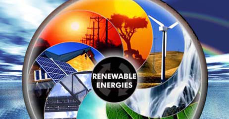
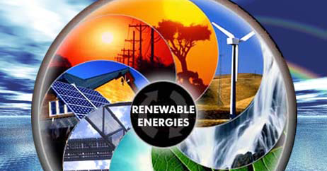
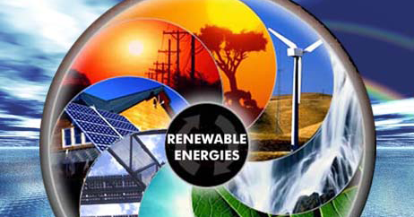
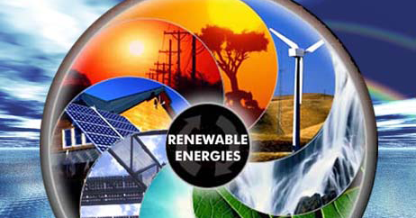

Que son las energias renovables?
Las energías renovables son aquellas fuentes de energía que se obtienen de recursos naturales que son inagotables o que se regeneran rápidamente en la naturaleza. Estas incluyen energía solar, eólica, hidroeléctrica, geotérmica, y biomasa. La principal característica de las energías renovables es que no se agotan con su uso y, por lo tanto, son consideradas más sostenibles a largo plazo en comparación con los combustibles fósiles, que son finitos y contribuyen al cambio climático. La captura y utilización de estas formas de energía renovable también puede tener un menor impacto ambiental en términos de emisiones de gases de efecto invernadero y otros contaminantes en comparación con las fuentes de energía convencionales.
Tipos de energia renovable y su funcionamiento
1-Energía Solar: Esta proviene del sol y puede ser capturada y convertida en electricidad mediante paneles solares fotovoltaicos o en calor mediante colectores solares térmicos. Es una fuente de energía muy versátil y abundante, especialmente en regiones con altos niveles de radiación solar.
2-Energía Eólica: Se genera a partir del viento. Los aerogeneradores capturan la energía cinética del viento y la convierten en electricidad. La energía eólica es una de las fuentes de energía renovable de más rápido crecimiento en el mundo y puede ser aprovechada tanto en tierra firme como en instalaciones marinas.
3-Energía Hidroeléctrica: Se obtiene a partir del movimiento del agua, generalmente mediante la construcción de presas y la captura de la energía cinética del agua en movimiento. Las centrales hidroeléctricas pueden ser de gran escala, como las represas, o de pequeña escala, como las turbinas instaladas en ríos.
4-Energía Geotérmica: Esta proviene del calor generado en el interior de la Tierra. Se puede aprovechar mediante la perforación de pozos geotérmicos para capturar el vapor o el agua caliente subterránea y utilizarlo para generar electricidad o proporcionar calefacción directa.
5-Energía de la Biomasa: Se deriva del procesamiento de materia orgánica, como residuos agrícolas, residuos forestales, desechos orgánicos municipales y cultivos energéticos, para producir biogás, biocombustibles líquidos o sólidos, y calor. La biomasa es una fuente de energía renovable versátil que puede ser utilizada para generar electricidad, calefacción y combustible para vehículos.
Estas son solo algunas de las principales formas de energía renovable, y cada una tiene sus propias ventajas y desafíos. La transición hacia una mayor utilización de las energías renovables es fundamental para reducir las emisiones de gases de efecto invernadero y mitigar el cambio climático.